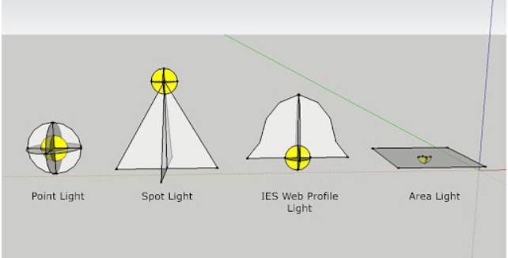

Ambient light adds a constant amount of light to all the objects in your scene.
Directional, spot andpoint lightsbehave like 3D objects and can be moved to illuminate objects from different positions in space.
Theenvironment lightmimics the lighting from a real-world setting - like the beach or a park, by using HDR texture files of these environments
Always remember that only a maximum of 4 lights can be placed in an effect at a time - excluding the ambient light, to save on performance
